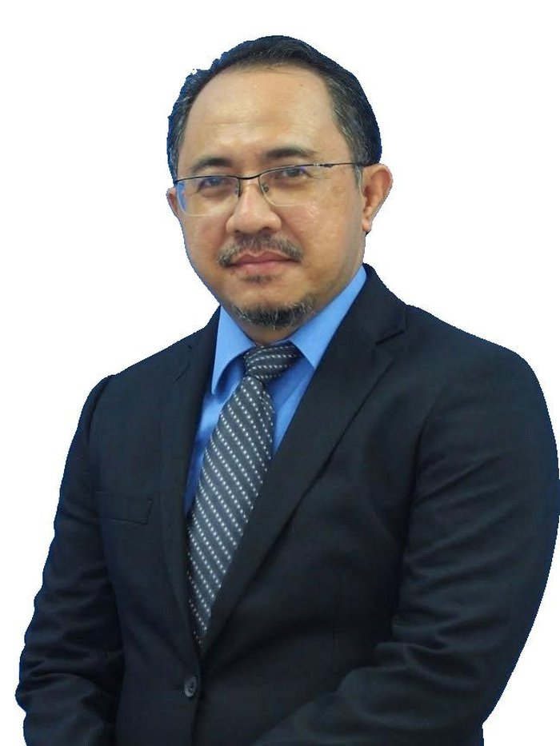

Senior Lecturer at Universiti Teknologi MARA Cawangan Perlis, working at the intersection of software engineering, big data systems, and web technologies — with two decades of teaching, research, and consultancy behind every line.

I am a Senior Lecturer in the School of Computing Sciences, Faculty of Computer and Mathematical Sciences at Universiti Teknologi MARA Cawangan Perlis, where I have taught and researched since 2010. My doctorate at Universiti Sains Malaysia focused on software engineering — specifically on hybrid hierarchical architectures for the integration and interoperability of one-stop e-government portals.
Today, my work moves between three currents. First, big data and analytics — designing teaching environments and dashboards on Hadoop, Hive, and Spark for student housing analysis, lung cancer risk assessment, and explainable AI in student success prediction. Second, web and mobile engineering — building systems that integrate Google Maps, WhatsApp APIs, IoT devices, and cloud platforms. Third, service to the discipline — reviewing for SCOReD, SCDS, JCRINN, and consulting on curriculum design for institutions across Malaysia.
Before the academy, I spent four years as a system analyst — a background I still draw on whenever I teach my students that a working system is the most honest form of theory.
Hybrid hierarchical and SOA-based architectures for one-stop e-government portals; secure development with UMLSEC; OWASP-guided web application design; systematic reviews of integration patterns.
Interactive dashboards on Hadoop, Hive, and Spark for student housing, blood donation during COVID-19, food-diabetes relationships, lung cancer risk, and rental house data in Perlis.
Web-based systems with WhatsApp and Google Maps integration; IoT home security with Telegram bots; geolocation services for workshops; sign language translation; CRM for the educational sector.
A fully containerized teaching environment for Hadoop HDFS, Apache Hive 4.0, MapReduce, and data warehousing. Used in workshops and undergraduate coursework, with hands-on exercises for external tables, Parquet ingestion, MapReduce WordCount on YARN, and Power BI integration via ODBC.
A companion lab for teaching distributed processing with PySpark, JupyterLab, and HDFS. Includes notebooks covering CSV ingestion, Spark DataFrame conversion, Parquet writes to HDFS, SparkSQL querying, and visualisation through Streamlit and Power BI via the Spark Thrift Server.
A Flask-based web application exploring AI-assisted question generation and quiz delivery. Built with a Python backend, server-rendered templates, and a lightweight static asset pipeline — a teaching platform for prototyping AI-in-the-loop educational tools.
An information system that revolutionises academic assessment of Final Year Projects through AI-driven evaluation. Built on a decade of insight from teaching CSP600 and CSP650, iFYPevS supports the full FYP supervision workflow — proposal management, supervisor allocation, milestone tracking, and rubric-driven evaluation — with AI assistance that surfaces consistency, fairness, and quality signals to examiners.
A selection from over thirty publications in software engineering, big data systems, e-government interoperability, and web-based applications. Full citation metrics are tracked on Google Scholar and Web of Science (links below).
Office
Pusat Pengajian Sains Pengkomputeran
Fakulti Sains Komputer dan Matematik
Universiti Teknologi MARA Cawangan Perlis
Kampus Arau, 02600 Arau, Perlis
Phone